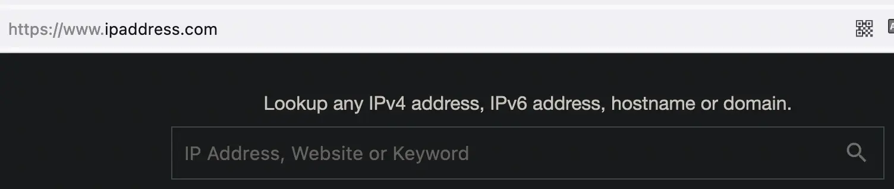

ip address.com查域名 
修改/etc/hosts
140.82.113.21 collector.Github.com
140.82.113.5 api.github.com
140.82.114.4 github.com
140.82.113.4 github.com
185.199.108.154 github.githubassets.com
185.199.109.154 github.githubassets.com
185.199.110.154 github.githubassets.com
185.199.111.154 github.githubassets.com
185.199.110.153 assets-cdn.github.com
185.199.111.153 assets-cdn.github.com
185.199.108.153 assets-cdn.github.com
199.232.69.194 github.global.ssl.fastly.net
原因是国内dns解析相应域名都是到新加坡,有时候访问不了
FastGithubgithub加速神器
osx-arm64版本会直接被杀死,改用osx-x86
[1] 9226 killed ./fastgithub
# 丢掉烦人的输出，并且后台运行
./fastgithub > /dev/null &
godoc -http=:6060 &
最新版firefox替换证书, 证书-查看证书-颁发机构-导入cer证书,否则报错
设置系统自动代理为http://127.0.0.1:38457，或手动代理http/https为127.0.0.1:38457
User/Organization Pages 个人或公司站点
Project Pages 项目站点
新建一个同名仓库
官方提示：…. is a special repository. Its README.md will appear on your public profile!
编辑该仓库的 README.md 文件
Sponsor：打赏
Watch：如有更新，通知提醒。
Fork：分支一份到你的仓库。
Code：默认页面，通常会有一个 README.md 文件，用于介绍该项目。
Pull requests：请求代码合并，如果你想为项目贡献代码，可以在这里提交。
Actions：工作流。
大家知道，持续集成由很多操作组成，比如抓取代码、运行测试、登录远程服务器，发布到第三方服务等等。GitHub 把这些操作就称为 actions。 很多操作在不同项目里面是类似的，完全可以共享。GitHub 注意到了这一点，想出了一个很妙的点子，允许开发者把每个操作写成独立的脚本文件，存放到代码仓库，使得其他开发者可以引用。 如果你需要某个 action，不必自己写复杂的脚本，直接引用他人写好的 action 即可，整个持续集成过程，就变成了一个 actions 的组合。这就是 GitHub Actions 最特别的地方。 GitHub 会监控到，然后分配一台虚拟机先将你的项目 checkout 过去，然后按照你指定的 step 顺序执行定义好的 action
Projects：项目管理
Security：安全评估
Wiki：说明文档
Insights：数据统计
codespaces 类似web IDE，省去环境配置环节，云端开发
高级搜索 例如包括nginx的pdf书 nginx extension:pdf
当使用 Github 将网站项目文件夹里的所有东西上传完毕之后，那么就可以打开 Netlify 给予它访问 Github 仓库的权限。 当 Netlify 读取完你的网站所属仓库时，会自动识别你所用的静态网页生成器的程序，然后只要点击部署并发布，你的网站就会在 Netlify 被构建并且被发布.
能够托管服务，免费 CDN
能够绑定自定义域名
能够启用免费的TLS证书，启用HTTPS
支持自动构建
提供 Webhooks 和 API
# ~/.ssh/config配置
Host github3
HostName github.com
PreferredAuthentications publickey
IdentityFile ~/.ssh/id_rsa
Host github2
HostName github.com
PreferredAuthentications publickey
IdentityFile ~/.ssh/id_ecdsa
# 修改远程地址
# git@github.com:xxx/yyy -> git@github3:xxx/yyy
# git@github.com:xxx/yyy -> git@github2:xxx/yyy